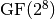
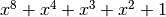
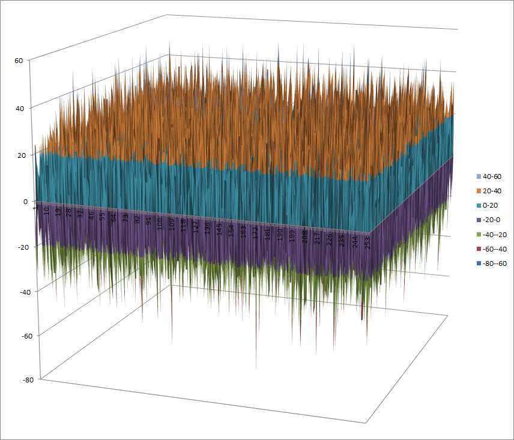

Anubis¶
Description¶
Anubis is a block cipher designed by Vincent Rijmen and Paulo S. L. M. Barreto as an entrant in the NESSIE project, a former research program initiated by the European Commission in 2000 for the identification of new cryptographic algorithms. Although the cipher has not been included in the final NESSIE portfolio, its design is considered very strong, and no attacks have been found by 2004 after the project had been concluded. It has a 8x8 S-box called S.
Summary¶
| S-box | size | NL | NL2 | LD | DEG | AI | MAXAC |  |
LP | DP |
|---|---|---|---|---|---|---|---|---|---|---|
| S | 8x8 | 94 | 40 | 7 | 4 | 96 | 272896 | 0.07055664063 | 0.03125 |
S¶
Representations¶
Polynomial function over  with irreducible polynomial : Trace representation
Polynomial representation in ANF
Walsh Spectrum representation (except first row and column):
{kind=link}
Other useful information in cryptanalysis¶
Cycle structure:
| Cycle length | Number of cycles |
|---|---|
| 2 | 128 |
There are no linear structures
It has no fixed points
It has 2 negated fixed points: (0,1,1,0,1,1,0,0), (1,0,0,1,0,0,1,1)